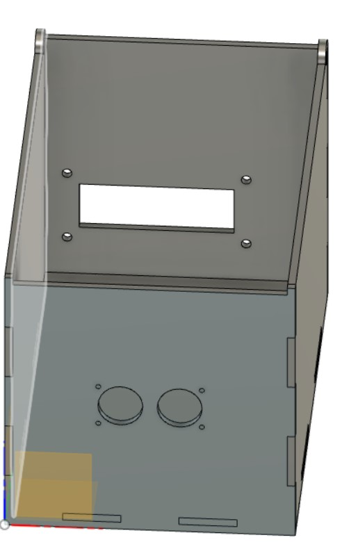
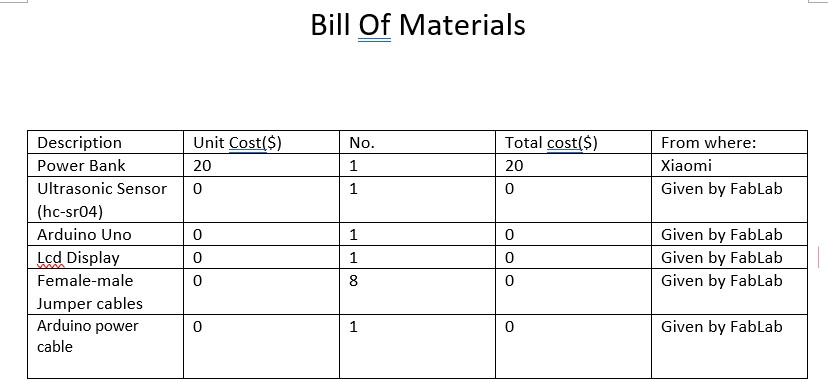
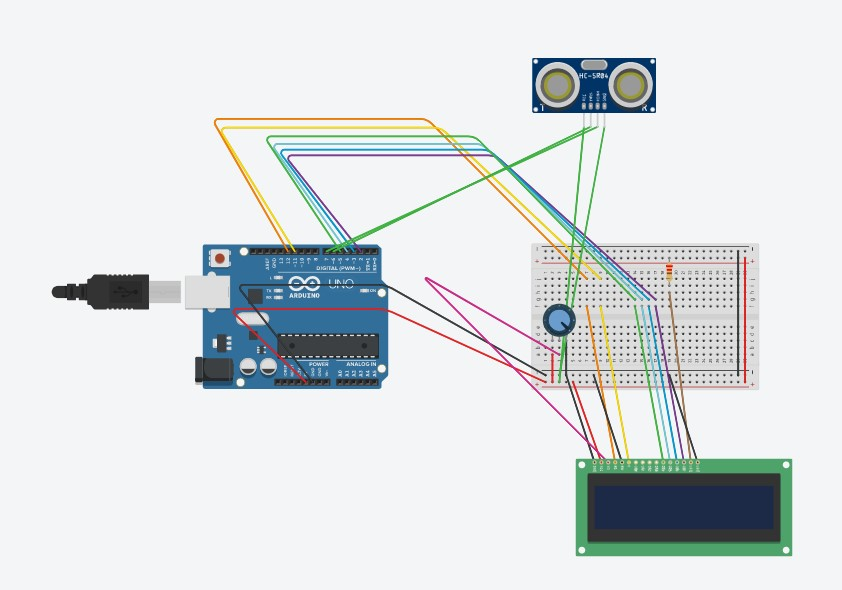
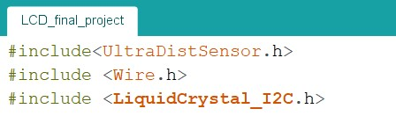
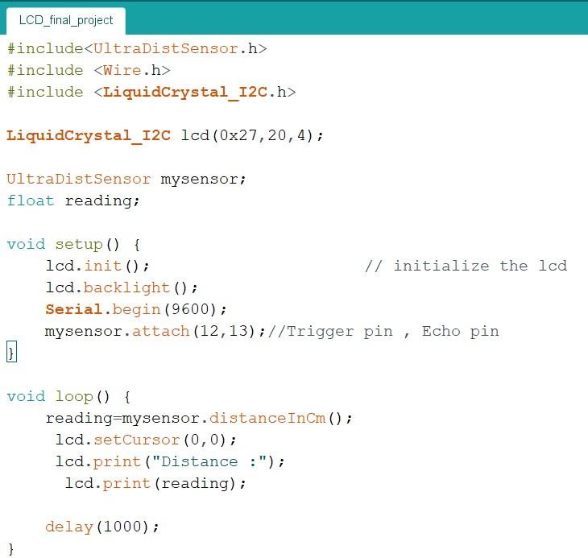

"The ultrasonic sensor ruler "
For my final project,i have chosen to design and create a ultrasonic sensor ruler
Content:
- original idea/ concept
- New idea
- Bill of materials
- Cable connection
- Arduino Coding
- conclusion
Original Idea/concept:
Originally, i wanted to create a "shy box" which closes when someone approaches it. However, it didnt seem like a good idea as it was impratical and didnt help solve any problems i had.

New idea
The new idea was to create a ultrasonic sensor ruler,which could determine the distance of between the user and a wall or object.This is particularly useful if you are an engineer and need to quickly get simple measurements.This new idea was more practical and much more useful.

Bill of materials:
A bill of materials or product structure is a list of the raw materials, sub-assemblies, intermediate assemblies, sub-components, parts, and the quantities of each needed to manufacture an end product
Cable connections
The cable connections for this new idea is fairly simple, as it contains only wiring for one LCD display and one ultrasonic sensor.  Luckily, the LCD display was fitted with a module that only had 4 pins,VCC,GND,SDA,SLC.connections are as follows:
- ultrasonic VCC ->Arduino pin VCC
- ultrasonic GND->Arduino pin GND
- ultrasonic TRIG->Arduino pin 12
- ultrasonic ECHO->Arduino pin 13
- LCD display VCC-> Arduino pin VCC
- LCD display GND-> Arduino pin GND
- LCD display SDA-> Arduino pin A4
- LCD display SCL-> Arduino pin A5
Arduino Coding
The coding was originally almost 60 lines of code but i have found a simpler method of coding in the form of libraries.
Libraries are a compilation of previously done codes which allows for special commands. Libraries can be added by downloading ZIP files from online platforms such as Arduino Libraries Adding libraries are simple just use the "#include libraries" command at the start of your arduino code  The completed code looks like this Conclusion
After spending much time on the project, i had finally managed to get the whole project to life, which meant that it was finally working and i was very excited to try it out. Please understand that the end product currently is still a prototype and there is still much room for improvement.Which includes:
- 3d printing housing for the components
- Adding lighting to the front of the box